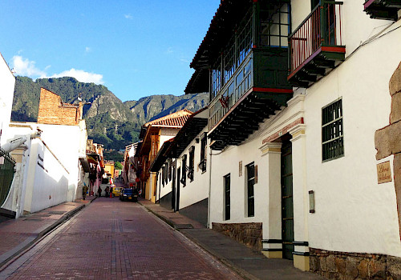
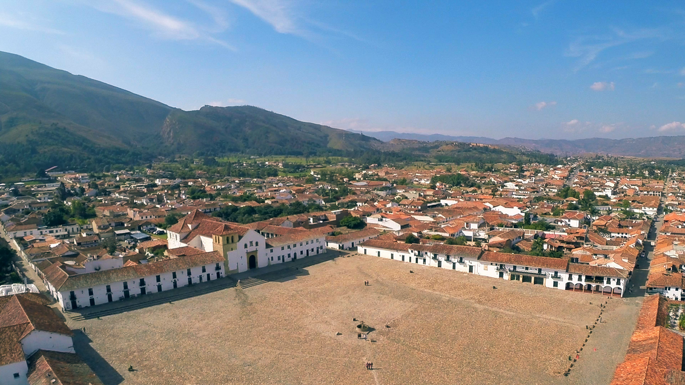
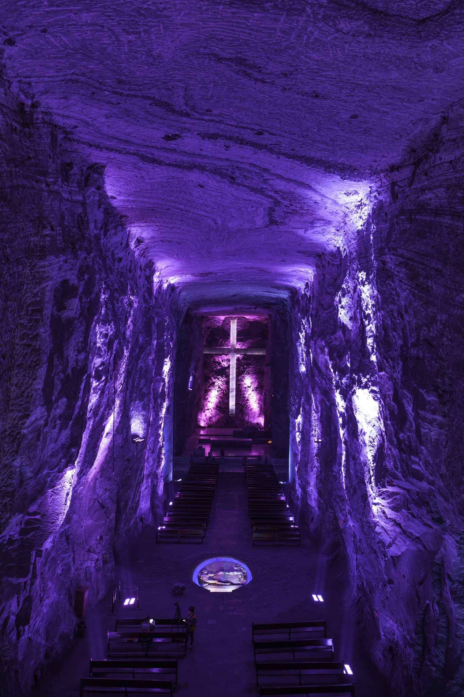
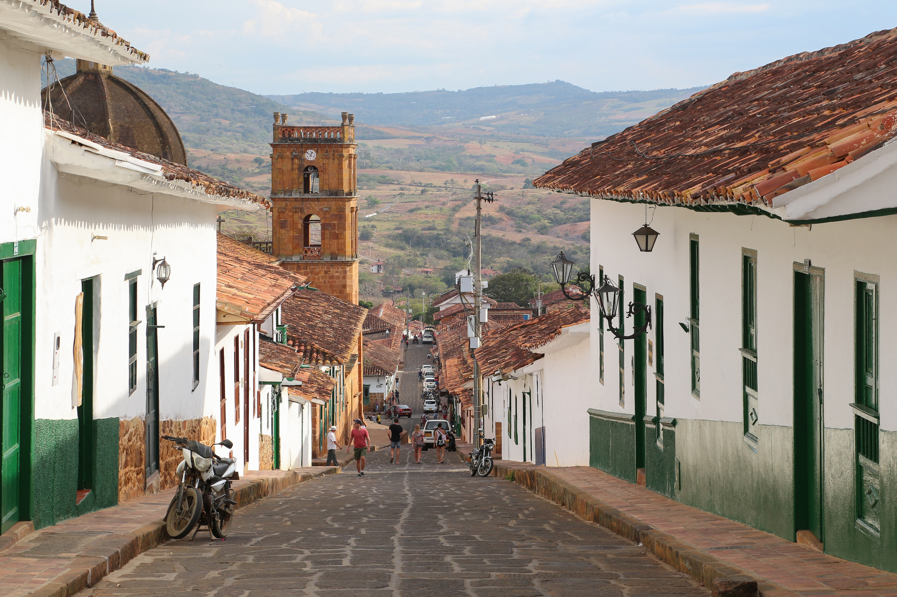
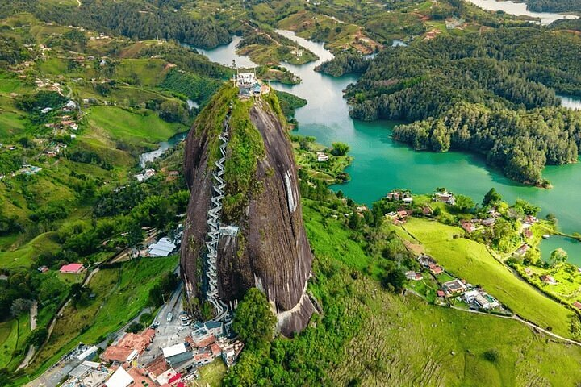

Idée voyage en petit groupe · 18 jours / 16 nuits
Colombie · Le Triangle Magique
Bogotá, Villa de Leyva, Barichara & Medellín
Demander un devis gratuitCulture, paysages et authenticité
Ce grand itinéraire en triangle relie les trésors des Andes colombiennes. Des hauteurs de Bogotá aux villages coloniaux classés Patrimonio comme Villa de Leyva et Barichara, jusqu'à l'effervescence de Medellín. Une immersion totale dans l'histoire, l'architecture et la nature d'une Colombie authentique.
Les trésors de votre itinéraire

🏛️ Bogotá & les Andes
- Quartier historique de la Candelaria
- Musée de l'Or & Monserrate
- Cathédrale de Sel de Zipaquirá

🏘️ Villa de Leyva
- Immense place pavée coloniale
- Musée des fossiles
- Ambiance hors du temps

⛪ Zipaquirá
- Spectaculaire Cathédrale de Sel
- Architecture souterraine unique
- Lumière mystique et spiritualité

🌄 Barichara & Girón
- Le plus beau village de Colombie
- Chemin royal des Muletiers
- La ville blanche de Girón

🧗 Guatapé
- Piedra del Peñol (740 marches)
- Panorama exceptionnel sur le lac
- Village aux zócalos colorés

🌸 Medellín innovante
- Musée d'Antioquia & Place Botero
- Metrocable & Comuna 13
- Ville du Printemps Éternel
740 marches vers le ciel
Au sommet de la Piedra del Peñol, le paysage de Guatapé se déploie à perte de vue. Un moment de pure magie colombienne.
Votre itinéraire jour par jour
Semaine 1 : Bogotá & Villa de Leyva
Arrivée à Bogotá
Accueil, installation et première découverte du quartier historique de la Candelaria.
Cœur culturel de Bogotá
Visite du Musée de l'Or et montée au Mirador de Monserrate (3 152 m) pour la vue panoramique.
La Cathédrale de Sel
Excursion à Zipaquirá pour découvrir cette merveille architecturale souterraine.
Route vers Villa de Leyva
Transfert vers ce joyau colonial. Installation et balade sur l'immense place pavée.
Villa de Leyva
Journée libre pour explorer le village, son musée des fossiles et ses environs (Lagune de Iguaque).
Semaine 2 : Les Pueblos Patrimonio
Direction Santander
Route panoramique vers la région de Santander, terre de contrastes et de canyons.
Barichara
Découverte du "plus beau village de Colombie". Ses rues en pierre blanche et son ambiance paisible.
Le Chemin Royal
Randonnée (facultative) sur l'ancien chemin royal muletier entre Barichara et Guane.
Girón & Bucaramanga
Visite de Girón, la "ville blanche" coloniale, avant de prendre un vol ou la route vers Medellín.
Semaine 3 : Medellín & Guatapé
Medellín, la ville innovante
Place Botero, Musée d'Antioquia, trajet en Metrocable et visite inspirante de la Comuna 13.
Excursion à Guatapé
Ascension des 740 marches de la Piedra del Peñol et découverte du village aux zócalos colorés.
Temps libre à Medellín
Dernières découvertes, shopping d'artisanat ou détente dans la ville du Printemps Éternel.
Retour et départ
Vol Medellín → Bogotá et vol international de retour vers la France.
Un triangle d'exception
Trois régions, trois ambiances, une seule Colombie. De l'altitude andine à la chaleur de Medellín.
Votre itinéraire sur la carte
Cliquez sur chaque point doré pour découvrir les étapes de votre voyage. La ligne bleue trace votre parcours à travers les Andes colombiennes.
Voyagez l'esprit tranquille : Zones sécurisées
Si certains endroits de Colombie restent à éviter, toutes les zones visitées lors de ce voyage sont parfaitement sûres pour les touristes. Nous appliquons les règles de bon sens suivantes :
- Ne pas marcher seul(e) tard le soir dans les rues désertes.
- Faire appeler un taxi (Cabify / Uber) par votre hôtel.
- Éviter les attitudes ostentatoires (bijoux, argent visible).
- Utiliser les distributeurs uniquement en journée, dans des lieux fréquentés.
- Redoubler de vigilance contre les pickpockets dans les transports en commun.
Envie de tracer votre triangle ?
Construisons ensemble votre itinéraire sur mesure de 18 jours.
Parlons de votre projet →